Ujaval Gandhi
Ujaval GandhiOsnovno stilizovanje i analiza rastera (QGIS3)¶
Mnogo naučnih zapažanja i istraživanja proizvodi rasterske skupove podataka. Rasteri su mreže piksela kojima je dodeljena određena vrednost. Izvođenjem matematičkih operacija nad ovim vrednostima, može se izvršiti zanimljiva analiza. QGIS ima neke osnovne mogućnosti analize ugrađene putem Rasterskog kalkulatora. U ovom tutorijalu ćemo istražiti dostupne opcije za stilizovanje rastera i funkcionalnosti koje pruža rasterski kalkulator.
Pregled zadatka¶
Koristićemo podatke iz mreže stanovništva da bismo napravili tematsku mapu globalnih promena stanovništva između 2000. i 2010. godine.
Druge veštine koje ćete naučiti¶
Kako kopirati/nalepiti stilove između slojeva
Dobijte podatke¶
Koristićemo skup podataka Gridded Population of the World (GPW) v4 sa Univerziteta Kolumbija. Konkretno, potreban nam je Population Count za celu globus u rezoluciji od 2,5 stepeni minuta u GeoTiFF formatu i za 2000. i 2010. godinu. Biće vam potreban besplatan Earth Data nalog da biste preuzeli podatke.

Radi lakšeg snalaženja, možete direktno preuzeti kopiju skupova podataka sa donjih linkova:
gpw-v4-population-count-rev11_2000_2pt5_min_tif.zip
gpw-v4-population-count-rev11_2010_2pt5_min_tif.zip
Izvor podataka [GPW4]
Procedura¶
Otvorite QGIS i pronađite preuzete datoteke u panelu Browser. Proširite datoteku
gpw-v4-population-count-rev11_2000_2pt5_min_tif.zipi prevucite datotekugpw-v4-population-count-rev11_2000_2pt5_min.tifna platno.
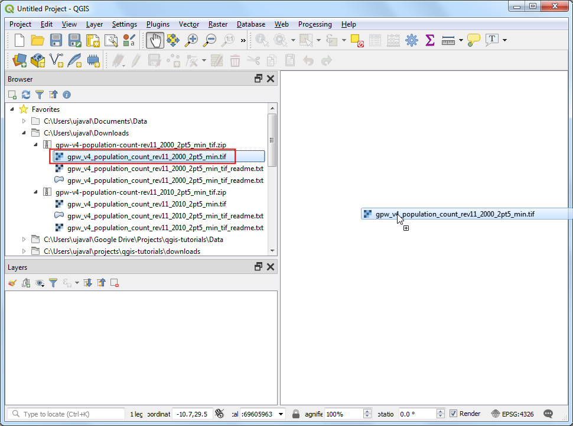
Novi sloj
gpw-v4-population-count-rev11_2000_2pt5_minbiće dodat na panel Slojevi. Slično tome, pronađite datotekugpw-v4-population-count-rev11_2010_2pt5_min_tif.zipi prevucite datotekugpw-v4-population-count-rev11_2010_2pt5_min.tifna platno.

Hajde da istražimo ove slojeve. Kliknite na dugme Identifikuj na Traci sa alatkama za atribute. Kada je alat izabran, kliknite na bilo koju tačku na platnu.
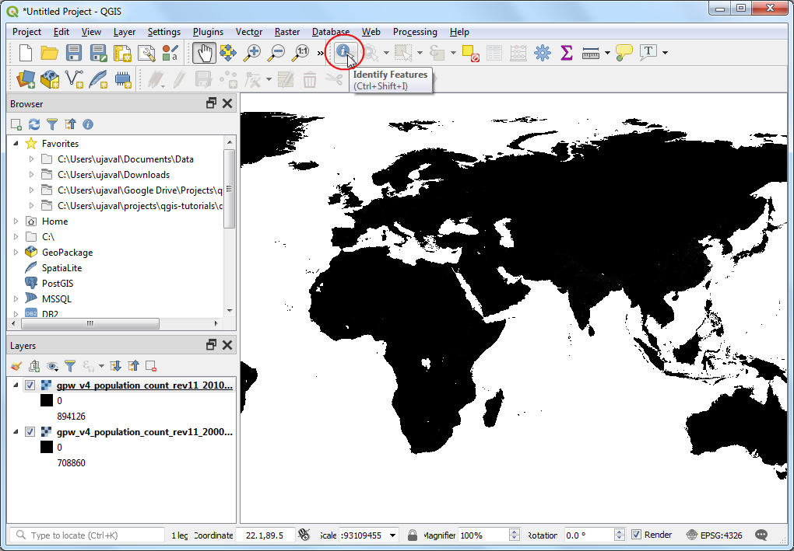
Vrednost povezana sa tim pikselom biće prikazana u novom panelu Identify Results. U panelu Identify Results, promenite Mode na
Od vrha nadole. Ovo će prikazati vrednosti piksela svih rastera umesto samo najgornjeg sloja. Uporedite vrednosti iz oba sloja. Pošto je rezolucija rastera približno 5 km x 5 km, vrednosti piksela predstavljaju ukupnu populaciju u području (25 kvadratnih kilometara) koje predstavlja piksel.
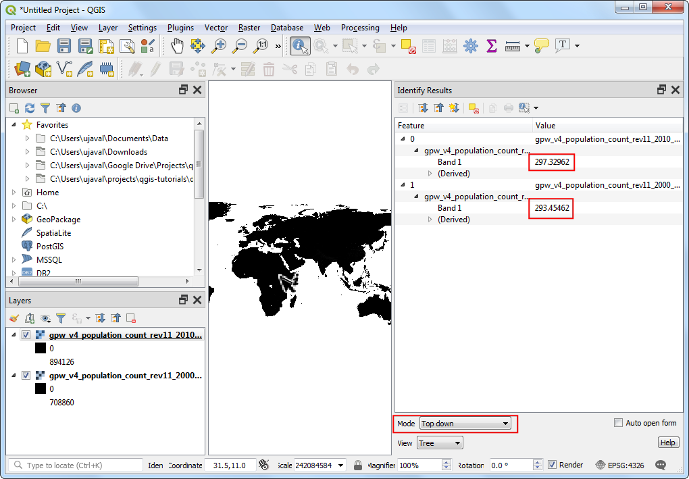
Zatvorite panel Identifikuj rezultate. Hajde da napravimo bolju vizuelizaciju slojeva. Kliknite na dugme Otvori panel za stilizovanje sloja u panelu Slojevi.

U panelu Stilizovanje sloja, kliknite na padajući meni Tip renderovanja i izaberite renderer
Jednopojasna pseudoboja.
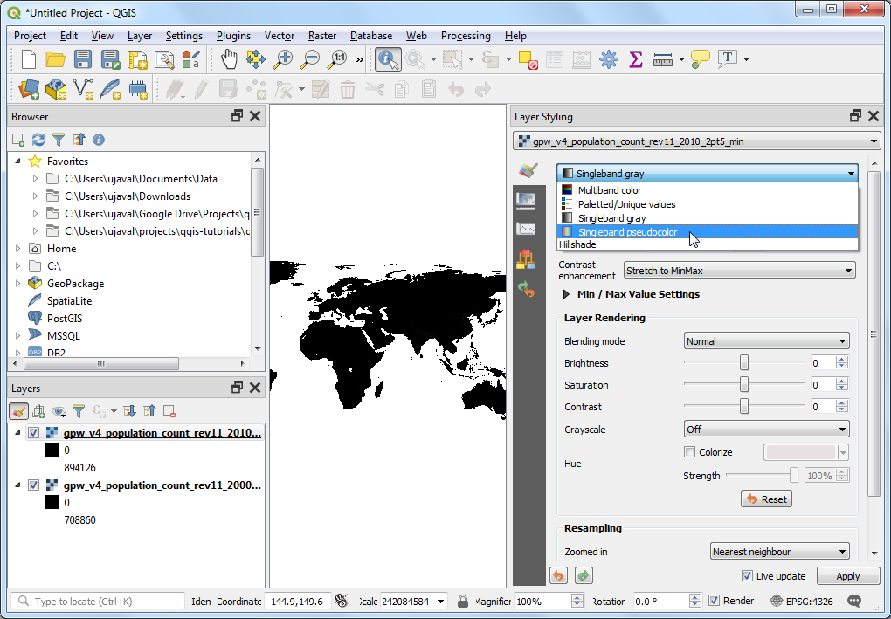
Ovaj renderer će stilizovati sloj koristeći skalu boja. Podrazumevana skala boja je belo-crvena gde će minimalna vrednost biti dodeljena beloj boji, a maksimalna vrednost u sloju će biti dodeljena crvenoj boji. Međuvrednostima će biti dodeljena nijansa crvene linearnom interpolacijom. Proširite Podešavanja min / maksimalne vrednosti i izaberite opciju
Kumulativno presecanje broja. Videćete da je vizuelizacija mape sada mnogo bolja. Standardni opseg podataka je podešen od 2% do 98% vrednosti podataka, što znači da se autlajeri neće koristiti za podešavanje minimalnih i maksimalnih vrednosti, što rezultira mnogo reprezentativnijom vizuelizacijom.

Zatvorite panel Stilizovanje sloja. Slično stilizovanje možemo primeniti i na drugi sloj. Ali postoji lakši način za prenos stilova sa jednog sloja na drugi. Kliknite desnim tasterom miša na sloj
gpw-v4-population-count-rev11_2010_2pt5_mini izaberite .
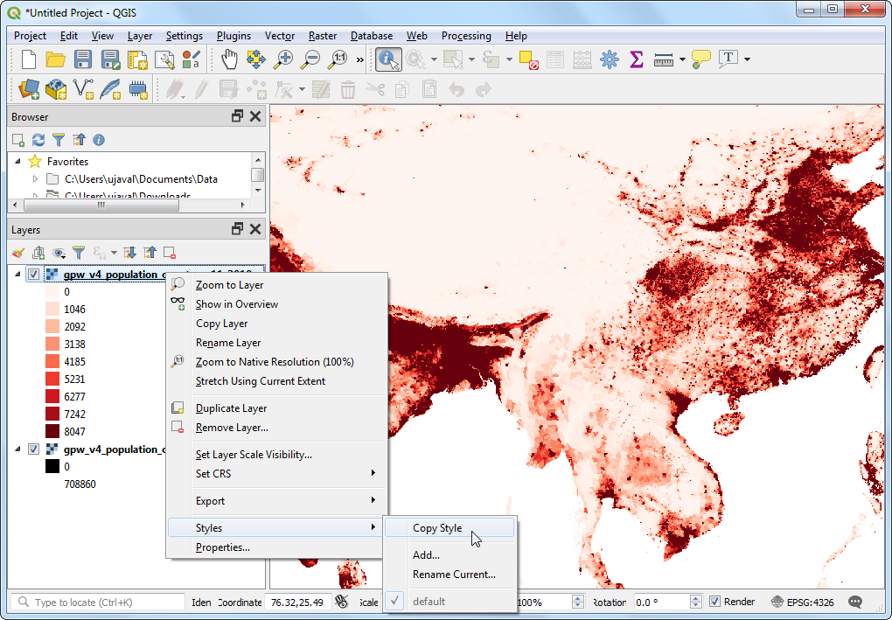
Sada kliknite desnim tasterom miša na nestilizovani sloj
gpw-v4-population-count-rev11_2000_2pt5_mini izaberite .
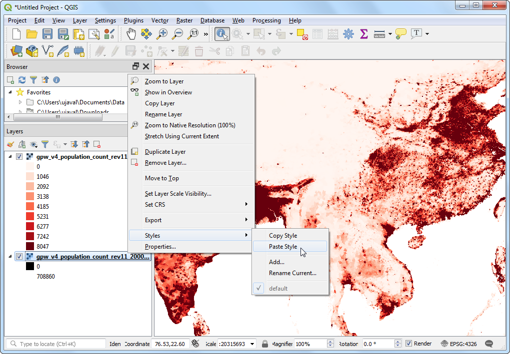
Isti parametri stilizovanja biće primenjeni na drugi sloj. Ova funkcija je posebno korisna kada želite da uporedite različite slojeve koristeći istu kategorizaciju. Dok menjate vidljivost gornjeg sloja, možete vizuelno videti promene u populaciji.

Naš zadatak je da napravimo tematsku mapu promena u populaciji. Hajde da izračunamo razliku izmeđju 2 sloja i napravimo još jedan raster gde svaki piksel predstavlja promenu u populaciji. Idite na .

Potražite Raster Calculator pod Raster Analysis i dvaput kliknite da biste otvorili alatku.
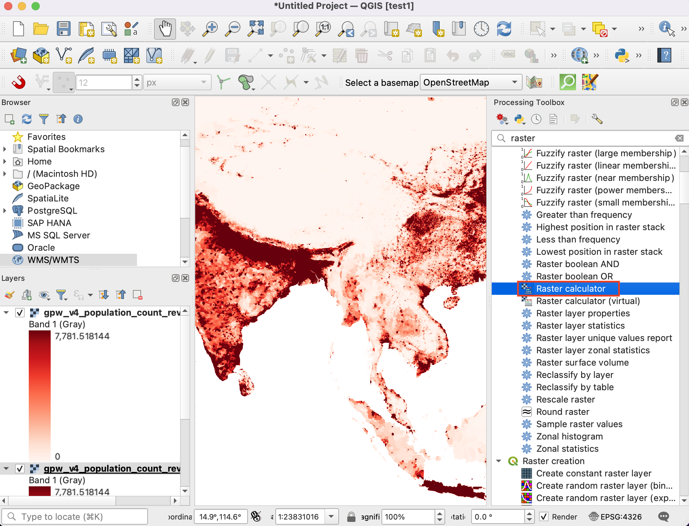
Izaberite oba sloja koristeći dugme … kao Ulazne slojeve. Kalkulator rastera može da primeni matematičke operacije na pikselima rastera. U ovom slučaju želimo da unesemo jednostavnu formulu za oduzimanje populacije iz 2010. od populacije iz 2000. Unesite sledeći izraz koristeći dugme e. U izrazu, trake su nazvane po imenu rastera nakon čega sledi
@i broj trake. Pošto svaki od naših rastera ima samo jednu traku, videćete imena sa@1dodatim nazivu sloja. Zadržite sve ostale opcije kao podrazumevane i sačuvajte izlazni sloj pod imenompopulation_change_2010_2000.tifi kliknite na Pokreni.
"gpw_v4_population_count_rev11_2010_2pt5_min.tif@1" - "gpw_v4_population_count_rev11_2000_2pt5_min.tif@1"
Kada se završi, novi sloj
population_change_2010_2000će biti dodat na panel Layers. Hajde da promenimo stil tako da se negativne i pozitivne promene populacije bolje vizuelizuju. Kliknite na dugme Otvori panel za stilizovanje sloja u panelu Layers.
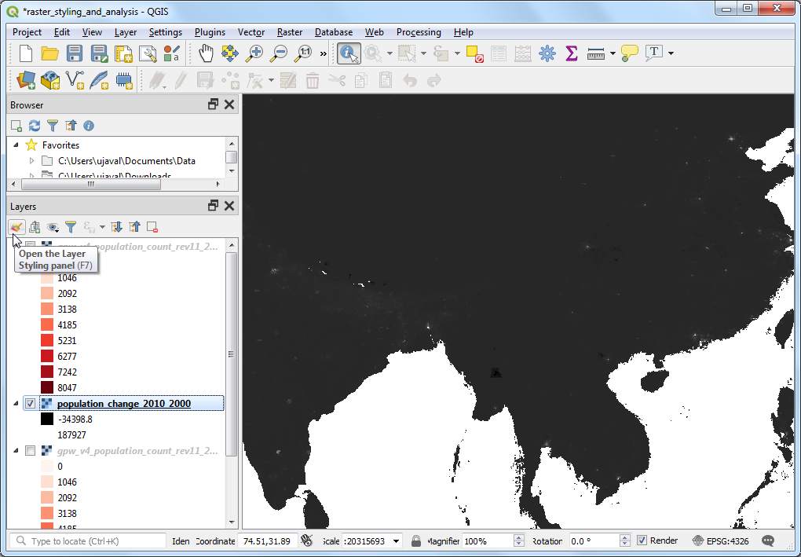
Jedna od opcija je da koristite sličnu tehniku stilizovanja kao ranije i izaberete divergentnu kolornu skalu. Kliknite na padajući meni Kolorna skala i izaberite Spektralna` skala. Ponovo kliknite na padajući meni i izaberite Invertiraj kolornu skalu` da biste dodelili plave boje niskim vrednostima, a crvene visokim vrednostima.

Ovo je dobra vizuelizacija, ali nije lako za interpretaciju. Hajde da napravimo bolju mapu sa 4 diskretne kategorije: „Pad“, „Neutralno“, „Rast“ i „Visok rast“. Pomerite se nadole do tabela sa klasama. Držite pritisnut taster Shift i izaberite sve redove. Kliknite na dugme Ukloni izabran(e) redove.

Promenite režim Interpolacija na
Diskretno. Sada ćemo ručno kreirati mapu boja. Kliknite na dugme Dodaj vrednosti ručno. Unesite-100kao Vrednost iOdbijanjekao Oznaka. Dodelite plavu boju ovoj kategoriji. Mapa boja funkcioniše tako što će sve vrednosti niže od unete vrednosti dobiti boju tog unosa. Primetićete da će platno prikazivati samo ona područja sa negativnom promenom populacije.
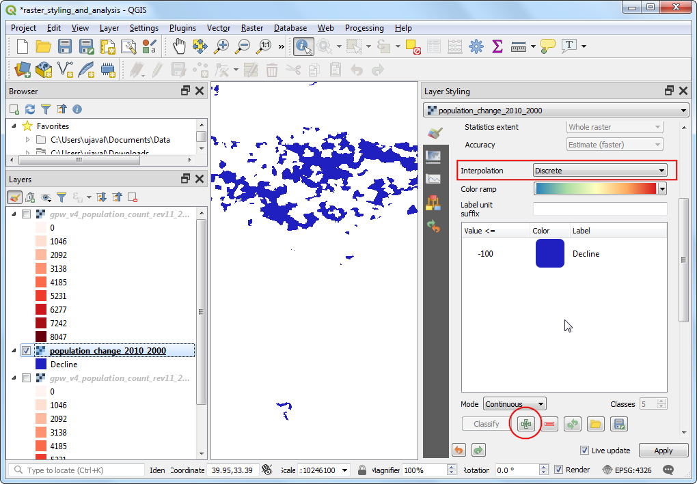
Dopunite mapu boja odgovarajućim vrednostima. Izabrao/la sam „100“, „1000“ i „100000“ kao gornje granice za kategorije „Neutralno“, „Rast“ i „Visok rast“, respektivno. Dodelite boje svakoj od kreiranih kategorija, na primer bež, narandžastu i crvenu.
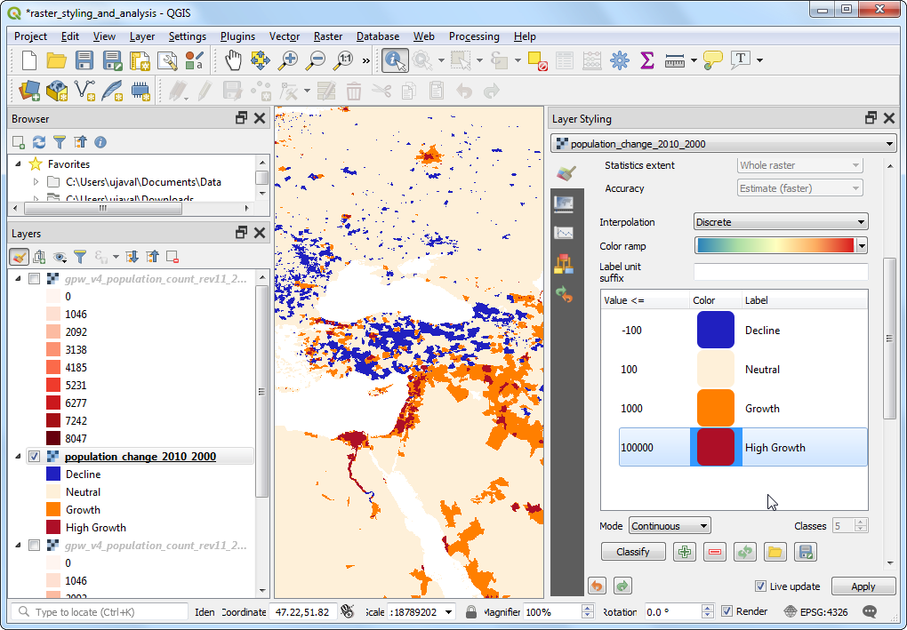
Kada ste zadovoljni vizuelizacijom, zatvorite panel Stilizovanje slojeva. Sada imate globalnu tematsku mapu promene populacije.
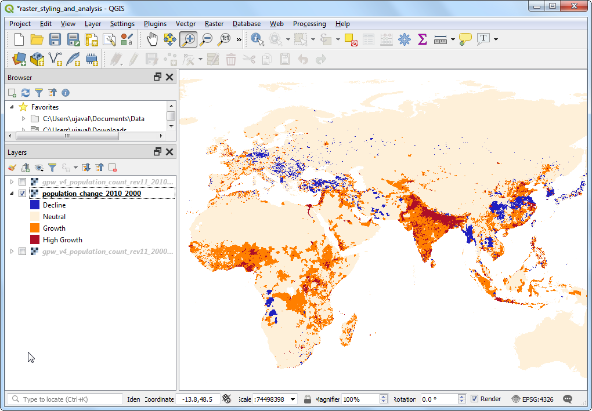
If you want to give feedback or share your experience with this tutorial, please comment below. (requires GitHub account)